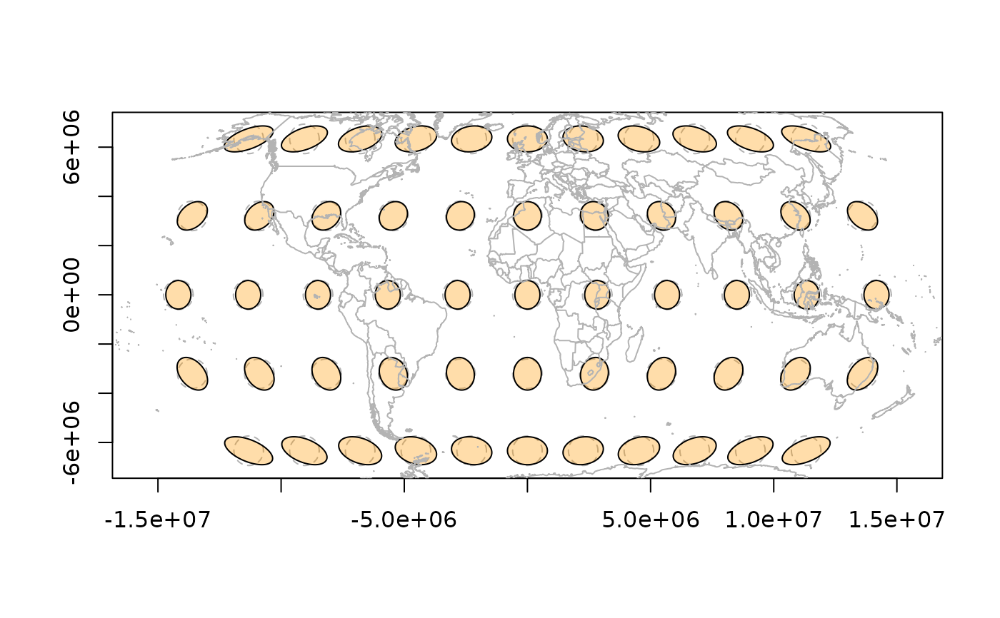
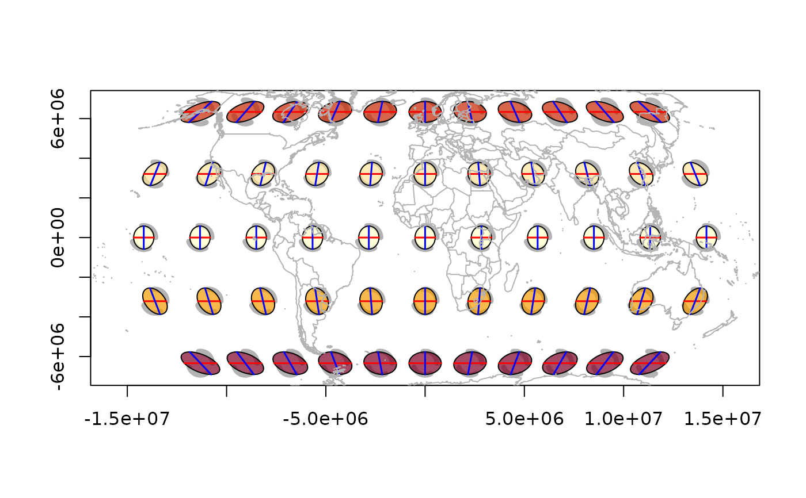

Draws all indicatrixes in an indicatrix_list, optionally creating a
new plot or adding to an existing one. Can colour-code the fill by a
distortion metric.
# S3 method for class 'indicatrix_list'
plot(
x,
scale = 1e+05,
n = 72,
col = "#FF990055",
border = "black",
add = FALSE,
show.axes = TRUE,
show.circle = TRUE,
fill.by = NULL,
palette = NULL,
ncolors = 64L,
...
)an indicatrix_list (from indicatrix())
scaling factor for ellipse size in projected units
number of points per ellipse
fill colour. If a single colour, used for all ellipses. If
NULL and fill.by is set, colours are generated automatically.
border colour
logical; add to existing plot? If FALSE, creates a new
plot sized to contain all ellipses.
TRUE, FALSE, or a named list of graphical parameters.
See plot.indicatrix() for defaults.
TRUE, FALSE, or a named list of graphical parameters.
Default TRUE for the list method (the circle-vs-ellipse comparison makes
distortion visible at map scale). See plot.indicatrix() for defaults.
character; name of a distortion metric to colour-code
the fill. One of "scale_area", "angle_deformation", "scale_h",
"scale_k", "scale_a", "scale_b". Default NULL (uniform fill).
colour palette function (default grDevices::hcl.colors())
number of colours in the palette (default 64)
passed to plot.indicatrix()
xy <- expand.grid(seq(-150, 150, by = 30), seq(-60, 60, by = 30))
r <- tissot(xy, "+proj=robin")
ii <- indicatrix(r)
## Uniform fill
plot(ii, scale = 6e5, add = FALSE)
tissot_map()

## Colour by areal distortion
plot(ii, scale = 6e5, add = FALSE, fill.by = "scale_area")
tissot_map()
